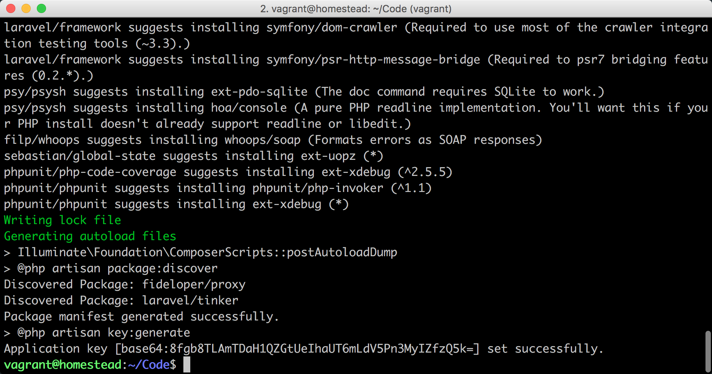
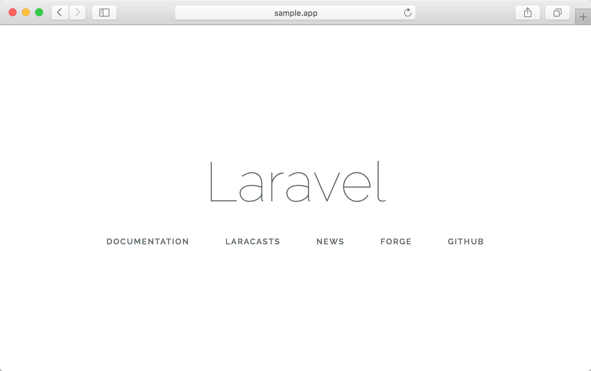
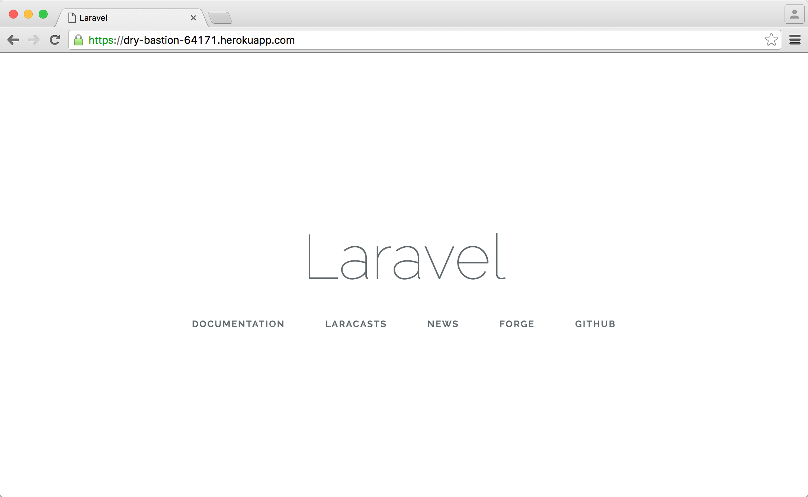

3.2. 创建应用
做好准备
由于我们接下来的开发都会在 Homestead 上进行，因此，在开始本章教程之前，请保证你的 Homestead 虚拟机已成功开启并登录。使用下面命令来启动和登录 Homestead：
> cd ~/Homestead && vagrant up
> vagrant ssh在虚拟机中进入 Code 文件夹：
$ cd ~/Code创建 sample 应用
下面让我们来使用 Composer 创建一个名为 sample 的应用，后面我们将基于这个应用做更多的功能完善：
$ cd ~/Code
$ composer create-project laravel/laravel sample --prefer-dist "5.5.*"
修改 hosts
每个 Laravel 项目创建完成后的第一步，即是对 Homestead 进行配置，让应用能在 Homestead 的开发环境上跑起来。
为了方便记忆，一般我们都会将 IP 映射为域名，我们能够通过设置 hosts 文件来指定 IP 与域名之间的映射关系，由于我们在 Homestead 上默认使用 192.168.10.10 来作为虚拟机的 IP 的地址，因此我们需要在系统的 hosts 文件中将域名指向该 IP 上。
Mac 下打开 Hosts 文件：
> atom /etc/hostsWindows 下打开 Hosts 文件：
> atom C:/Windows/System32/Drivers/etc/hostsWindows 下，如果你没有集成
atom命令的话， 请使用编辑器直接打开文件，文件路径在C:\Windows\System32\Drivers\etc\hosts。
文件成功打开后，在 hosts 文件最后面新增下面一行以完成设置：
192.168.10.10 sample.test新增站点
如果你安装了 Atom，可通过运行下面命令打开 Homestead.yaml 文件：
> atom ~/Homestead/Homestead.yaml在 Homestead.yaml 文件中新增 sample 应用的 sites 和 databases 的相关设置：
---
ip: "192.168.10.10"
memory: 2048
cpus: 1
provider: virtualbox
authorize: ~/.ssh/id_rsa.pub
keys:
- ~/.ssh/id_rsa
folders:
- map: ~/Code
to: /home/vagrant/Code
sites:
- map: homestead.test
to: /home/vagrant/Code/Laravel/public
- map: sample.test # <--- 这里
to: /home/vagrant/Code/sample/public # <--- 这里
databases:
- homestead
- sample # <--- 这里
variables:
- key: APP_ENV
value: local
# blackfire:
# - id: foo
# token: bar
# client-id: foo
# client-token: bar
# ports:
# - send: 93000
# to: 9300
# - send: 7777
# to: 777
# protocol: udp我们主要设置了 sites 和 databases 两项。 sites 会将域名 sample.test 映射到虚拟机的 /home/vagrant/Code/sample/public 文件夹上，而 databases 则为新创建的项目指定数据库名。
重启虚拟机
在我们每次对 Homestead.yaml 文件进行了更改之后，都需要运行下面命令来使其更改生效：
> cd ~/Homestead && vagrant provision && vagrant reloadvagrant provision是命令 Vagrant 重新加载Homestead.yaml配置；vagrant reload是重启虚拟机使更改生效。
.env 文件
接下来，我们还需要对应用根目录下的 .env 文件进行设置，为应用指定数据库名称 sample。
.env
.
.
.
DB_DATABASE=sample
.
.
.在 .env 文件中，除了 DB_DATABASE 之外还有其它的设置信息，接下来让我们对里面的几项配置信息进行简单讲解。
一般来说，在进行实际应用的开发过程中，应用会拥有不同的运行环境，通常会有以下环境：
- 本地开发环境
- 测试环境
- 生产环境
在不同环境中，我们可能会使用不同的数据库或邮件发送驱动等配置，这时候则需要通过 .env 文件来针对不同的运行环境作不同的设置。比如上面我们所编辑的 .env 文件配置将应用在本地的开发环境（local）上。
.env 支持对应用的进行简单配置，比如你可以通过 APP_ENV 来设定当前应用的运行环境，使用 APP_DEBUG 来设定是否在应用报错时显示调试信息，使用 APP_KEY 来生成应用的密钥用于加密一些较为敏感的数据。
APP_ENV=local
APP_DEBUG=true
APP_KEY=your_app_key我们也可以对数据库的连接方式、数据库名、用户名密码等做相关配置：
DB_CONNECTION=mysql
DB_HOST=127.0.0.1
DB_DATABASE=sample
DB_USERNAME=homestead
DB_PASSWORD=secret缓存、会话、队列等驱动的相关配置信息：
CACHE_DRIVER=file
SESSION_DRIVER=file
QUEUE_DRIVER=syncRedis 相关的配置信息：
REDIS_HOST=127.0.0.1
REDIS_PASSWORD=null
REDIS_PORT=6379邮件相关的配置信息：
MAIL_DRIVER=smtp
MAIL_HOST=mailtrap.io
MAIL_PORT=2525
MAIL_USERNAME=null
MAIL_PASSWORD=null
MAIL_ENCRYPTION=null在完成对 .env 文件的设置后，我们便可以通过传参给 getenv 方法来获取到 .env 文件中指定的值，如调用 getenv('APP_ENV') 将返回 local。
访问应用
现在让我们在 Chrome 浏览器中打开 http://sample.test 你应该能看到有如下界面显示：

Git 代码版本控制
为了在接下来更好的追踪项目代码的更改，我们还需要将新建的 Laravel 项目纳入到 Git 版本管理中：
$ cd ~/Code/sample
$ git init
$ git add -A
$ git commit -m "Initial commit"我们前面已讨论过关于使用 GitHub 的种种好处，而现在是我们开始正式应用它的时候了。熟悉一个东西最快的方法就是不断训练，不断重复，因此本教程接下来项目构建的代码都将统一托管到 GitHub 上，以便让你对 GitHub 的使用更加熟悉。现在，我们需要在 GitHub 上新建一个名为 sample 的项目 点击创建新项目，并将代码推送上去：
注意请把下面的 <username> 替换为你的用户名。
$ git remote add origin git@github.com:<username>/sample.git
$ git push -u origin master上线代码
为了降低项目接下来持续部署的出错率，我们最好在一开始就将项目部署到 Heroku 上。通过在前面教程的学习，我们知道在每个 Laravel 项目开始构建时，都需要对 Heroku 进行以 4 个步骤的配置才能正常使用。
1、创建一个 Heroku App：
$ heroku create2、配置 Procfile 文件：
$ echo web: vendor/bin/heroku-php-apache2 public/ > Procfile
$ git add -A
$ git commit -m "Procfile for Heroku"
$ git push
$ heroku buildpacks:set heroku/php3、生成 App Key：
$ php artisan key:generate
Application key [base64:MVTsBvo52CJl3Ud1/4gAsqnDzHVaw4EhgpE6oxxx4=] set successfully.将生成的 App Key （如以上 base64:MVTsBvo52CJl3Ud1/4gAsqnDzHVaw4EhgpE6oxxx4= ） 替换掉下面命令的 <your_app_key> 并运行命令：
$ heroku config:set APP_KEY=<your_app_key>4、配置基本完成，将代码推送到 Heroku 上：
$ git push heroku master使用以下命令查看 Heroku 站点地址：
$ heroku domains
=== dry-bastion-64171 Heroku Domain
dry-bastion-64171.herokuapp.com注意以上的 dry-bastion-64171 为变量，每一个不同的 Heroku 都会不一样。直接访问域名即可看到：

使用 Heroku 过程中如果出现问题，则可以使用下面命令来输出生产环境上的日志进行排错：
$ heroku logs在接下来的教程中，为了保证我们的代码风格一致，以避免引起不必要的歧义。我们在 Atom 上安装一个叫 EditorConfig 的插件，在进行团队协作开发时，这个插件能起到很大作用。安装完成之后，我们需要在 Laravel 应用的根目录下添加 .editorconfig 文件，并写入如下的配置信息。
.editorconfig
# coding styles between different editors and IDEs
# editorconfig.org
root = true
[*]
# Change these settings to your own preference
indent_style = space
indent_size = 4
# We recommend you to keep these unchanged
end_of_line = lf
charset = utf-8
trim_trailing_whitespace = true
insert_final_newline = false
[*.{js,html,blade.php,css,scss}]
indent_style = space
indent_size = 4
[*.md]
trim_trailing_whitespace = false接着让我们将该文件加入到版本控制中。
$ git add -A
$ git commit -m "Add .editorconfig"